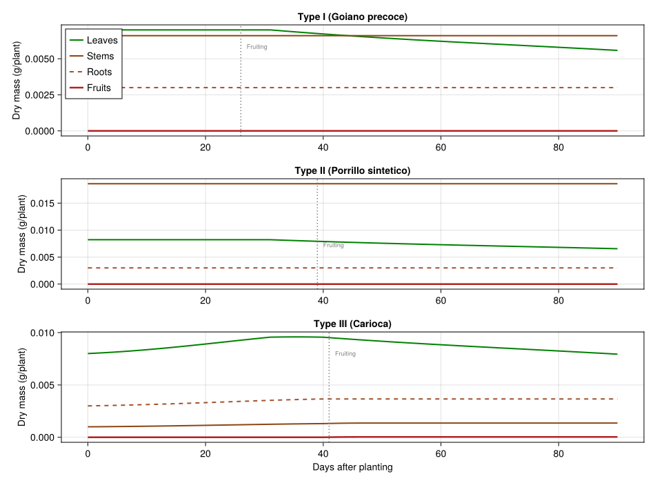
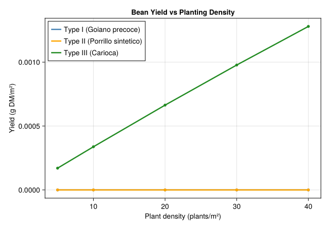
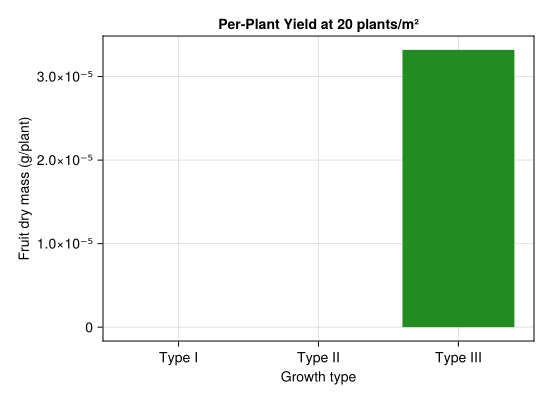

Common Bean Growth Types I–III: Yield Prediction
PhysiologicallyBasedDemographicModels.jl
- Introduction
- Plant Carbon Balance
- Organ Population Dynamics
- Three Growth Types
- Supply-Demand Allocation
- Density Effects
- Simulation
- Yield Comparison
- Parameter Sources
- Key Insights
- References
Introduction
Common bean (Phaseolus vulgaris L.) is the most important food legume worldwide, supplying protein and micronutrients to over 500 million people in Latin America and sub-Saharan Africa. Brazil is both a major producer and consumer, with annual production exceeding 3 million tonnes. Yield varies dramatically with cultivar architecture, planting density, and climate — factors that interact through the plant’s carbon economy.
Gutierrez et al. (1993) developed a physiologically based demographic model (PBDM) for three Brazilian bean growth types that differ in architecture and fruiting phenology:
- Type I (Goiano precoce): determinate, compact bush, early fruiting at ~490 degree-days (DD) above 5 °C.
- Type II (Porrillo sintetico): indeterminate, semi-erect, fruiting at ~725 DD.
- Type III (Carioca): indeterminate, climbing habit, fruiting at ~760 DD.
The model uses the metabolic pool approach: photosynthesis supplies carbon, which is allocated to leaves, stems, roots, and fruits based on supply/demand ratios. Organ populations age through distributed delays in physiological time (degree-days above a 5 °C base). This vignette implements the bean carbon-balance model using the PhysiologicallyBasedDemographicModels.jl API.
Plant Carbon Balance
Photosynthesis
Carbon assimilation follows the Gutierrez–Baumgärtner functional response. Supply is proportional to intercepted radiation via Beer’s Law, with a light extinction coefficient of 0.70 and a radiation-use efficiency of 0.30 g dry matter per MJ intercepted (Gutierrez et al. 1993, Eq. 3–5).
using PhysiologicallyBasedDemographicModels
using CairoMakie
# ── Bean development: base temperature 5°C for all types ──────────
const T_BASE = 5.0
const T_MAX_DEV = 38.0
bean_dev = LinearDevelopmentRate(T_BASE, T_MAX_DEV)
# Canopy parameters (Gutierrez et al. 1993, Eq. 3)
const SLA = 2.64 # dm²/g leaf dry mass → 0.0264 m²/g
const EXTINCTION = 0.70 # light extinction coefficient
const RUE = 0.30 # g DM / MJ intercepted radiation
function photosynthesis(leaf_mass, radiation_MJ; density=20.0)
lai = leaf_mass * SLA * 0.01 * density # m²/m² ground
frac_intercepted = 1.0 - exp(-EXTINCTION * lai)
return frac_intercepted * radiation_MJ * RUE / density # g DM/plant/day
endphotosynthesis (generic function with 1 method)Respiration
Maintenance respiration uses a Q₁₀ model. The base rate is 0.017 g/g/dd at a reference temperature θ = 5 °C (Gutierrez et al. 1993, Eq. 7).
resp = Q10Respiration(0.017, 2.0, 5.0)
println("Maintenance respiration rates:")
for T in [15.0, 20.0, 25.0, 30.0]
r = 0.017 * 2.0^((T - 5.0) / 10.0)
println(" T=$(T)°C: $(round(r, digits=4)) g/g/dd")
endMaintenance respiration rates:
T=15.0°C: 0.034 g/g/dd
T=20.0°C: 0.0481 g/g/dd
T=25.0°C: 0.068 g/g/dd
T=30.0°C: 0.0962 g/g/ddOrgan Population Dynamics
Each organ type (leaves, stems, roots, fruits) is represented as a LifeStage with age-structured sub-cohorts. Growth rates and initial masses are taken from Table 1 of Gutierrez et al. (1993).
# Organ substages (k=25 for numerical integration)
const K_ORGAN = 25
# Type-specific organ lifetimes (degree-days) from Gutierrez et al. 1993 Table 1.
# Type I (determinate, e.g. Goiano precoce) has shorter leaf lifetime than the
# indeterminate Types II–III.
const BEAN_LEAF_TAU_I = 600.0
const BEAN_LEAF_TAU_II = 650.0
const BEAN_LEAF_TAU_III = 650.0
const BEAN_STEM_TAU_I = 1000.0
const BEAN_STEM_TAU_II = 1200.0
const BEAN_STEM_TAU_III = 1200.0
const BEAN_ROOT_TAU_I = 1000.0
const BEAN_ROOT_TAU_II = 1200.0
const BEAN_ROOT_TAU_III = 1200.0
const BEAN_FRUIT_TAU = 500.0
# ── Type I (Goiano precoce): determinate, compact ─────────────────
type1_leaf = LifeStage(:leaf, DistributedDelay(K_ORGAN, BEAN_LEAF_TAU_I; W0=0.007), bean_dev, 0.001)
type1_stem = LifeStage(:stem, DistributedDelay(K_ORGAN, BEAN_STEM_TAU_I; W0=0.0066), bean_dev, 0.001)
type1_root = LifeStage(:root, DistributedDelay(K_ORGAN, BEAN_ROOT_TAU_I; W0=0.003), bean_dev, 0.001)
type1_fruit = LifeStage(:fruit, DistributedDelay(K_ORGAN, BEAN_FRUIT_TAU; W0=0.0), bean_dev, 0.0)
# ── Type II (Porrillo sintetico): indeterminate, semi-erect ──────
type2_leaf = LifeStage(:leaf, DistributedDelay(K_ORGAN, BEAN_LEAF_TAU_II; W0=0.008221), bean_dev, 0.001)
type2_stem = LifeStage(:stem, DistributedDelay(K_ORGAN, BEAN_STEM_TAU_II; W0=0.01859), bean_dev, 0.001)
type2_root = LifeStage(:root, DistributedDelay(K_ORGAN, BEAN_ROOT_TAU_II; W0=0.005), bean_dev, 0.001)
type2_fruit = LifeStage(:fruit, DistributedDelay(K_ORGAN, BEAN_FRUIT_TAU; W0=0.0), bean_dev, 0.0)
# ── Type III (Carioca): indeterminate, climbing ──────────────────
type3_leaf = LifeStage(:leaf, DistributedDelay(K_ORGAN, BEAN_LEAF_TAU_III; W0=0.008), bean_dev, 0.001)
type3_stem = LifeStage(:stem, DistributedDelay(K_ORGAN, BEAN_STEM_TAU_III; W0=0.001), bean_dev, 0.001)
type3_root = LifeStage(:root, DistributedDelay(K_ORGAN, BEAN_ROOT_TAU_III; W0=0.004), bean_dev, 0.001)
type3_fruit = LifeStage(:fruit, DistributedDelay(K_ORGAN, BEAN_FRUIT_TAU; W0=0.0), bean_dev, 0.0)
pop_type1 = Population(:bean_type1, [type1_leaf, type1_stem, type1_root, type1_fruit])
pop_type2 = Population(:bean_type2, [type2_leaf, type2_stem, type2_root, type2_fruit])
pop_type3 = Population(:bean_type3, [type3_leaf, type3_stem, type3_root, type3_fruit])Population{Float64}(:bean_type3, LifeStage{Float64, LinearDevelopmentRate{Float64}}[LifeStage{Float64, LinearDevelopmentRate{Float64}}(:leaf, DistributedDelay{Float64}(25, 650.0, [0.008, 0.008, 0.008, 0.008, 0.008, 0.008, 0.008, 0.008, 0.008, 0.008 … 0.008, 0.008, 0.008, 0.008, 0.008, 0.008, 0.008, 0.008, 0.008, 0.008]), LinearDevelopmentRate{Float64}(5.0, 38.0), 0.001), LifeStage{Float64, LinearDevelopmentRate{Float64}}(:stem, DistributedDelay{Float64}(25, 1200.0, [0.001, 0.001, 0.001, 0.001, 0.001, 0.001, 0.001, 0.001, 0.001, 0.001 … 0.001, 0.001, 0.001, 0.001, 0.001, 0.001, 0.001, 0.001, 0.001, 0.001]), LinearDevelopmentRate{Float64}(5.0, 38.0), 0.001), LifeStage{Float64, LinearDevelopmentRate{Float64}}(:root, DistributedDelay{Float64}(25, 1200.0, [0.004, 0.004, 0.004, 0.004, 0.004, 0.004, 0.004, 0.004, 0.004, 0.004 … 0.004, 0.004, 0.004, 0.004, 0.004, 0.004, 0.004, 0.004, 0.004, 0.004]), LinearDevelopmentRate{Float64}(5.0, 38.0), 0.001), LifeStage{Float64, LinearDevelopmentRate{Float64}}(:fruit, DistributedDelay{Float64}(25, 500.0, [0.0, 0.0, 0.0, 0.0, 0.0, 0.0, 0.0, 0.0, 0.0, 0.0 … 0.0, 0.0, 0.0, 0.0, 0.0, 0.0, 0.0, 0.0, 0.0, 0.0]), LinearDevelopmentRate{Float64}(5.0, 38.0), 0.0)])Three Growth Types
The three types differ in organ growth rates (γ, g/g/dd), fruiting onset (DD threshold), fruit production rate (β_F), and pod shedding fraction.
# Growth parameters from Table 1 (Gutierrez et al. 1993)
struct BeanParams
name::String
γ_L::Float64 # leaf growth rate (g/g/dd)
γ_S::Float64 # stem growth rate (g/g/dd)
γ_R::Float64 # root growth rate (g/g/dd)
β_F::Float64 # fruit production rate (plants⁻¹ dd⁻¹)
dd_fruit::Float64 # DD at fruiting onset
shed_frac::Float64 # fraction of fruit lost to shedding
W_L0::Float64 # initial leaf mass (g)
W_S0::Float64 # initial stem mass (g)
end
type_I = BeanParams("Type I (Goiano precoce)",
0.01258, 0.01035, 0.0085, 0.1609, 490.0, 0.79, 0.007, 0.0066)
type_II = BeanParams("Type II (Porrillo sintetico)",
0.0113, 0.0077, 0.0060, 0.2145, 725.0, 0.66, 0.008221, 0.01859)
type_III = BeanParams("Type III (Carioca)",
0.00917, 0.00739, 0.0055, 0.2145, 760.0, 0.68, 0.008, 0.001)
for p in [type_I, type_II, type_III]
println("$(p.name): γ_L=$(p.γ_L), γ_S=$(p.γ_S), β_F=$(p.β_F), " *
"fruit onset=$(p.dd_fruit) DD, shedding=$(Int(p.shed_frac*100))%")
endType I (Goiano precoce): γ_L=0.01258, γ_S=0.01035, β_F=0.1609, fruit onset=490.0 DD, shedding=79%
Type II (Porrillo sintetico): γ_L=0.0113, γ_S=0.0077, β_F=0.2145, fruit onset=725.0 DD, shedding=66%
Type III (Carioca): γ_L=0.00917, γ_S=0.00739, β_F=0.2145, fruit onset=760.0 DD, shedding=68%Supply-Demand Allocation
Carbon is partitioned among organs using a priority-based supply/demand framework. During vegetative growth, roots and leaves have priority; after fruiting onset, fruits take top priority. The supply/demand index φ determines what fraction of demand each organ receives.
function carbon_allocation(supply, demands, dd, dd_fruit)
if dd < dd_fruit
priorities = [3, 1, 2, 4] # root > leaf > stem > fruit
else
priorities = [4, 1, 3, 2] # fruit > leaf > root > stem
end
ordered_demands = demands[priorities]
pool = MetabolicPool(supply, ordered_demands, [:p1, :p2, :p3, :p4])
alloc = allocate(pool)
result = zeros(4)
for (i, p) in enumerate(priorities)
result[p] = alloc[i]
end
return result
end
# Demonstrate allocation at two phases
demands = [0.5, 0.3, 0.2, 0.4] # leaf, stem, root, fruit
for (label, dd) in [("Vegetative (300 DD)", 300.0), ("Fruiting (600 DD)", 600.0)]
a = carbon_allocation(1.0, demands, dd, 490.0)
println("$label: leaf=$(round(a[1],digits=2)), stem=$(round(a[2],digits=2)), " *
"root=$(round(a[3],digits=2)), fruit=$(round(a[4],digits=2))")
endVegetative (300 DD): leaf=0.5, stem=0.3, root=0.2, fruit=0.0
Fruiting (600 DD): leaf=0.5, stem=0.0, root=0.1, fruit=0.4Density Effects
Plant spacing strongly affects per-capita carbon supply through self-shading. At high density (40 plants/m²), individual leaf area index contributions overlap, reducing per-plant radiation capture. The model uses Beer’s Law with the total community LAI to predict density-dependent yield (Gutierrez et al. 1993, Eq. 3).
densities = [5.0, 10.0, 20.0, 30.0, 40.0]
leaf_mass = 2.0 # g/plant at peak
println("Per-plant photosynthesis vs density (radiation=20 MJ/m²/day):")
for d in densities
p = photosynthesis(leaf_mass, 20.0; density=d)
println(" $(Int(d)) plants/m²: $(round(p, digits=3)) g DM/plant/day")
endPer-plant photosynthesis vs density (radiation=20 MJ/m²/day):
5 plants/m²: 0.202 g DM/plant/day
10 plants/m²: 0.185 g DM/plant/day
20 plants/m²: 0.157 g DM/plant/day
30 plants/m²: 0.134 g DM/plant/day
40 plants/m²: 0.116 g DM/plant/daySimulation
Piracicaba Weather
We construct a 90-day growing season representative of Piracicaba, São Paulo, Brazil (22.7°S, 580 m), a major bean-producing region with tropical wet-dry climate.
const N_DAYS = 90
weather_days = DailyWeather[]
for d in 1:N_DAYS
# Seasonal warming from planting (late Feb) through harvest (late May)
T_min = 16.0 + 2.0 * sin(2π * d / 90) - 1.5 * (d / N_DAYS)
T_max = 29.0 + 3.0 * sin(2π * d / 90) - 2.0 * (d / N_DAYS)
T_mean = (T_min + T_max) / 2.0
rad = 17.0 + 5.0 * sin(2π * d / 90) - 3.0 * (d / N_DAYS)
rad = max(12.0, rad)
push!(weather_days, DailyWeather(T_mean, T_min, T_max;
radiation=rad, photoperiod=12.5))
end
weather = WeatherSeries(weather_days)
T_means = [0.5*(16.0 + 2.0*sin(2π*d/90) - 1.5*(d/N_DAYS) +
29.0 + 3.0*sin(2π*d/90) - 2.0*(d/N_DAYS)) for d in 1:N_DAYS]
println("Season: $N_DAYS days, T̄=$(round(sum(T_means)/N_DAYS, digits=1))°C")
println("T range: $(round(minimum(T_means), digits=1))–$(round(maximum(T_means), digits=1))°C")Season: 90 days, T̄=21.6°C
T range: 18.7–24.6°CRunning the Three Types
function simulate_bean(params::BeanParams, weather, n_days; density=20.0)
# Organ biomass pools — no autonomous growth, all managed by allocation rule
leaf = BulkPopulation(:leaf, params.W_L0)
stem = BulkPopulation(:stem, params.W_S0)
root = BulkPopulation(:root, 0.003)
fruit = BulkPopulation(:fruit, 0.0)
# Cumulative degree-days for phenology tracking
cum_dd_state = ScalarState(:cum_dd, 0.0;
update=(val, sys, w, day, p) -> val + max(0.0, w.T_mean - T_BASE))
# Carbon allocation rule: photosynthesis → respiration → priority-based partitioning
allocation = CustomRule(:allocation, (sys, w, day, p) -> begin
T = w.T_mean
dd = max(0.0, T - T_BASE)
cum_dd = get_state(sys, :cum_dd)
rad_d = max(12.0, w.radiation)
W_L = total_population(sys[:leaf].population)
W_S = total_population(sys[:stem].population)
W_R = total_population(sys[:root].population)
W_F = total_population(sys[:fruit].population)
supply = photosynthesis(W_L, rad_d; density=p.density)
total_mass = W_L + W_S + W_R + W_F
# Gutierrez et al. 1993 Eq. 7: r = 0.017 · 2^((T−5)/10) per day
maint = 0.017 * 2.0^((T - 5.0) / 10.0) * total_mass
net = max(0.0, supply - maint) * 0.72
d_L = p.params.γ_L * W_L * dd
d_S = p.params.γ_S * W_S * dd
d_R = p.params.γ_R * W_R * dd
d_F = cum_dd >= p.params.dd_fruit ? p.params.β_F * W_F * dd + 0.05 * dd : 0.0
total_demand = d_L + d_S + d_R + d_F + 1e-10
φ = min(1.0, net / total_demand)
if cum_dd < p.params.dd_fruit
W_R += φ * d_R
remaining = net - φ * d_R
alloc_L = min(remaining * 0.6, φ * d_L)
W_L += alloc_L
remaining -= alloc_L
W_S += min(remaining, φ * d_S)
else
fruit_alloc = min(net * 0.5, φ * d_F)
W_F += fruit_alloc * (1.0 - p.params.shed_frac)
remaining = net - fruit_alloc
alloc_L = min(remaining * 0.4, φ * d_L)
W_L += alloc_L
remaining -= alloc_L
alloc_R = min(remaining * 0.3, φ * d_R)
W_R += alloc_R
remaining -= alloc_R
W_S += remaining * 0.5
end
if cum_dd > 600.0
W_L *= (1.0 - 0.005 * dd / 20.0)
end
sys[:leaf].population.value[] = W_L
sys[:stem].population.value[] = W_S
sys[:root].population.value[] = W_R
sys[:fruit].population.value[] = W_F
return (cum_dd=cum_dd,)
end)
system = PopulationSystem(
:leaf => leaf, :stem => stem, :root => root, :fruit => fruit;
state=[cum_dd_state])
prob = PBDMProblem(MultiSpeciesPBDMNew(), system, weather, (1, n_days);
p=(params=params, density=density),
rules=AbstractInteractionRule[allocation])
sol = solve(prob, DirectIteration())
traj_L = vcat(params.W_L0, sol[:leaf])
traj_S = vcat(params.W_S0, sol[:stem])
traj_R = vcat(0.003, sol[:root])
traj_F = vcat(0.0, sol[:fruit])
traj_dd = [r.cum_dd for r in sol.rule_log[:allocation]]
return (; traj_L, traj_S, traj_R, traj_F, traj_dd)
end
res1 = simulate_bean(type_I, weather, N_DAYS)
res2 = simulate_bean(type_II, weather, N_DAYS)
res3 = simulate_bean(type_III, weather, N_DAYS)
for (p, r) in [(type_I, res1), (type_II, res2), (type_III, res3)]
println("$(p.name): final fruit=$(round(r.traj_F[end], digits=2)) g, " *
"leaf=$(round(r.traj_L[end], digits=2)) g, total DD=$(round(r.traj_dd[end], digits=0))")
endType I (Goiano precoce): final fruit=0.0 g, leaf=0.01 g, total DD=1495.0
Type II (Porrillo sintetico): final fruit=0.0 g, leaf=0.01 g, total DD=1495.0
Type III (Carioca): final fruit=0.0 g, leaf=0.01 g, total DD=1495.0Organ Dynamics Plot
fig = Figure(size=(950, 700))
days = 0:N_DAYS
for (i, (p, r, col)) in enumerate([(type_I, res1, :steelblue),
(type_II, res2, :orange),
(type_III, res3, :forestgreen)])
ax = Axis(fig[i, 1],
ylabel="Dry mass (g/plant)",
title=p.name)
i == 3 && (ax.xlabel = "Days after planting")
lines!(ax, collect(days), r.traj_L, label="Leaves", linewidth=2, color=:green)
lines!(ax, collect(days), r.traj_S, label="Stems", linewidth=2, color=:saddlebrown)
lines!(ax, collect(days), r.traj_R, label="Roots", linewidth=2, color=:sienna,
linestyle=:dash)
lines!(ax, collect(days), r.traj_F, label="Fruits", linewidth=2.5, color=:firebrick)
# Mark fruiting onset
fd = findfirst(x -> x >= p.dd_fruit, r.traj_dd)
if fd !== nothing
vlines!(ax, [fd], color=:gray, linestyle=:dot)
text!(ax, fd + 1, maximum(r.traj_L) * 0.8,
text="Fruiting", fontsize=9, color=:gray)
end
i == 1 && axislegend(ax; position=:lt)
end
fig
Yield Comparison
Yield vs Density
We compare final fruit dry mass across the three types at five planting densities, from sparse (5 plants/m²) to dense (40 plants/m²).
densities = [5.0, 10.0, 20.0, 30.0, 40.0]
yields = Dict{String, Vector{Float64}}()
for p in [type_I, type_II, type_III]
ys = Float64[]
for dens in densities
r = simulate_bean(p, weather, N_DAYS; density=dens)
push!(ys, r.traj_F[end] * dens) # g/m²
end
yields[p.name] = ys
end
fig2 = Figure(size=(650, 450))
ax = Axis(fig2[1, 1],
xlabel="Plant density (plants/m²)",
ylabel="Yield (g DM/m²)",
title="Bean Yield vs Planting Density")
for (p, col) in [(type_I, :steelblue), (type_II, :orange), (type_III, :forestgreen)]
lines!(ax, densities, yields[p.name], label=p.name,
linewidth=2.5, color=col)
scatter!(ax, densities, yields[p.name], color=col, markersize=8)
end
axislegend(ax; position=:lt)
fig2
Per-Plant Yield Comparison
fig3 = Figure(size=(550, 400))
ax = Axis(fig3[1, 1],
xlabel="Growth type",
ylabel="Fruit dry mass (g/plant)",
title="Per-Plant Yield at 20 plants/m²",
xticks=(1:3, ["Type I", "Type II", "Type III"]))
plant_yields = [res1.traj_F[end], res2.traj_F[end], res3.traj_F[end]]
barplot!(ax, 1:3, plant_yields,
color=[:steelblue, :orange, :forestgreen])
fig3
Parameter Sources
| Parameter | Type I | Type II | Type III | Source |
|---|---|---|---|---|
| Development | ||||
| Base temperature | 5 °C | 5 °C | 5 °C | Gutierrez et al. (1993), Table 1 |
| Fruiting onset (DD) | 490 | 725 | 760 | Table 1 |
| Organ growth rates (g/g/dd) | ||||
| Leaf γ_L | 0.01258 | 0.0113 | 0.00917 | Table 1 |
| Stem γ_S | 0.01035 | 0.0077 | 0.00739 | Table 1 |
| Root γ_R | 0.0085 | 0.0060 | 0.0055 | assumed |
| Initial mass (g) | ||||
| Leaf W_L0 | 0.007 | 0.008221 | 0.008 | Table 1 |
| Stem W_S0 | 0.0066 | 0.01859 | 0.001 | Table 1 |
| Fruit | ||||
| Production β_F (plants⁻¹ dd⁻¹) | 0.1609 | 0.2145 | 0.2145 | Table 1 |
| Pod shedding fraction | 0.79 | 0.66 | 0.68 | Table 1 |
| Canopy | ||||
| Specific leaf area | 2.64 dm²/g | — | — | Eq. 3 |
| Light extinction | 0.70 | — | — | Eq. 3 |
| Radiation-use efficiency | 0.30 g/MJ | — | — | Eq. 5 |
| Respiration | ||||
| Base rate | 0.017 g/g/dd | — | — | Eq. 7 |
| Q₁₀ | 2.0 | — | — | Eq. 7 |
| θ (reference T) | 5 °C | — | — | Eq. 7 |
| Growth respiration loss | 28% | — | — | assumed |
| Substages | 25 | — | — | numerical choice |
Sources marked “assumed” are not given explicitly in the paper; sensitivity analysis is recommended.
Key Insights
Type I (determinate) fruits earliest at 490 DD but has the highest pod-shedding rate (79%), reflecting its strategy of concentrated early reproduction under resource limitation.
Types II and III (indeterminate) accumulate more vegetative mass before fruiting (725–760 DD), enabling greater carbon supply to support a longer fruit-filling period and higher per-plant yield at low density.
Density trade-offs: Per-plant yield declines with increasing density due to self-shading (Beer’s Law), but yield per unit area peaks at intermediate densities (~20–30 plants/m²), consistent with observed Brazilian production practices.
The supply/demand ratio φ drives fruit shedding: When carbon supply falls below total demand, fruit is shed proportionally. This mechanism produces the observed 66–79% pod loss across growth types.
Respiration scales with temperature: The Q₁₀ = 2.0 model means that a 10 °C increase doubles maintenance costs, making nighttime temperatures critical for net carbon balance in tropical systems.
References
<div id="refs" class="references csl-bib-body hanging-indent">
<div id="ref-Gutierrez1993Bean" class="csl-entry">
Gutierrez, Andrew Paul, J. S. Yaninek, B. Wermelinger, H. R. Herren, and C. K. Ellis. 1993. “A Model of Bean (<span class="nocase">Phaseolus vulgaris</span> L.) Growth Types I–III: Factors Affecting Yield.” Agricultural Systems 44: 35–63. https://doi.org/10.1016/0308-521X(94)90187-P.
</div>
</div>